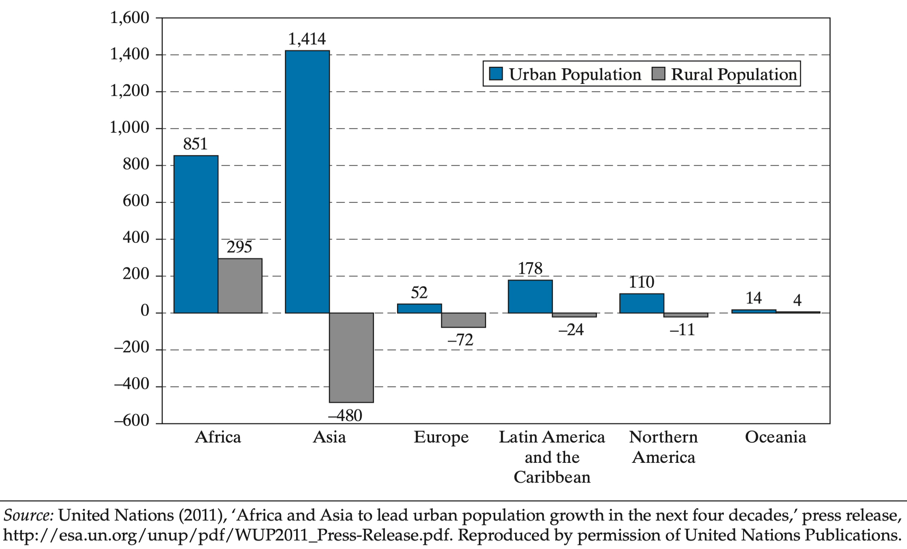
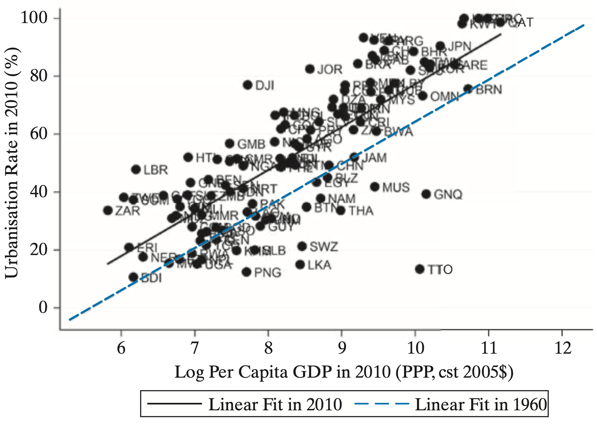

Rural-Urban Migration
EC 390 - Development Economics
2025
Migration
So Far…
We have seen that most societies start as agrarian
- Then new technology makes agriculture more efficient
- Which means that fewer people need to work in agriculture
- The surplus agricultural labor transitions toward the industrial sector
- But where do they work?
- Cities
Urban/Rural Population
Urbanization and Per Capita GDP
Migration and Growth

There is a clear correlation between urban migration and growth
But the direction isn’t very clear
Migration
What factors could be contributing to the growth of cities?
We can think of two different categories:
1. Push Factors
2. Pull Factors
Migration
What factors could be contributing to the growth of cities?
We can think of two different categories:
1. Push Factors
- Lack of Economic Opportunities: Low agricultural productivity, underemployment, unstable farm incomes
- Poor Living Conditions Limited access to healthcare, education, poor infrastructure
- Environmental pressures Drought, soil degradation, natural disasters
2. Pull Factors
Migration
What factors could be contributing to the growth of cities?
We can think of two different categories:
1. Push Factors
2. Pull Factors
- Employment prospect Cities offer more jobs, especially in manufacturing, services, and the informal sector
- Better Services and Amenities Access to education, healthcare, and infrastructure draws migrants
- Social and Lifestyle Appeal Greater connectivity, modern lifestyles, and social mobility
Key Terms
Urban Bias: Governments favor urban areas over rural areas
Rural-to-Urban Migration: Movement of people from farms to urban center
Agglomeration Economy Cost advantages of grouping consumers and producers in the same area
Role of Cities
Role of Cities
Cities can be thought of as a massive coordination success
- As distance between consumers and producers increases we see:
- Communication being more difficult
- Transportation becomes more expensive
- Market information is less transparent
- Example:
- Shopping for a car in Portland allows you a lot of opportunity for information
- Shopping for a car in Tillamook can be more difficult with less information
Agglomeration Economies
Definition: Being close to others makes production and consumption cheaper and more efficient than being isolated
There are also spillover effects from agglomeration
1. Knowledge Spillovers
2. Labor Market Spillovers
3. Shared Infrastructure and Services Spillovers
4. Market Access and Consumer Spillovers
5. Social and Institutional Spillovers
Agglomeration Spillovers
1. Knowledge Spillovers
- Skills and ideas spread faster than in isolated rural economies
- Things like observing new production techniques or copying better business practices raise productivity
2. Labor Market Spillovers
3. Shared Infrastructure and Services Spillovers
4. Market Access and Consumer Spillovers
5. Social and Institutional Spillovers
Agglomeration Spillovers
1. Knowledge Spillovers
2. Labor Market Spillovers
- Cities create “thicker labor markets”, where workers and employers can find better matches
- Firms get access to more skilled labor, and workers find more job opportunities
3. Shared Infrastructure and Services Spillovers
4. Market Access and Consumer Spillovers
5. Social and Institutional Spillovers
Agglomeration Spillovers
1. Knowledge Spillovers
2. Labor Market Spillovers
3. Shared Infrastructure and Services Spillovers
- Concentration of firms makes it cheaper for governments to provide roads, electricity, sanitation, and internet access
- Reduces costs for all businesses and supports further investment
4. Market Access and Consumer Spillovers
5. Social and Institutional Spillovers
Agglomeration Spillovers
1. Knowledge Spillovers
2. Labor Market Spillovers
3. Shared Infrastructure and Services Spillovers
4. Market Access and Consumer Spillovers
- Urban areas bring together large groups of consumers, creating bigger and more diverse markets
- Encourages entrepreneurship and specialization
5. Social and Institutional Spillovers
Agglomeration Spillovers
1. Knowledge Spillovers
2. Labor Market Spillovers
3. Shared Infrastructure and Services Spillovers
4. Market Access and Consumer Spillovers
5. Social and Institutional Spillovers
- Cities often become centers for education, finance, and governance
- Urban exposure can change social norms (gender equality, attitudes toward education, or entrepreneurship, etc.)
Agglomeration Example (Sillicon Valley)

Role of Cities
That was a lot of benefits that cities may give
But what about cons?
1. Overcrowding and Housing Shortages
2. Infrastructure Strain
3. Inequality and Informal Employment
4. Environmental Degradation
5. Rising Cost of Living
6. Social and Governance Challenges
Cons of Cities
1. Overcrowding and Housing Shortages
- Rapid inflows of people can overwhelm housing supply, leading to slums and informal settlements
- Overcrowded conditions often lack clean water, sanitation, and electricity
2. Infrastructure Strain
3. Inequality and Informal Employment
4. Environmental Degradation
5. Rising Cost of Living
6. Social and Governance Challenges
Cons of Cities
1. Overcrowding and Housing Shortages
2. Infrastructure Strain
- Cities may grow faster than their roads, public transit, and utilities can expand
- Leading to congestion, power outages, and inadequate waste management
- Governments struggle to finance and coordinate urban planning
3. Inequality and Informal Employment
4. Environmental Degradation
5. Rising Cost of Living
6. Social and Governance Challenges
Cons of Cities
1. Overcrowding and Housing Shortages
2. Infrastructure Strain
3. Inequality and Informal Employment
- Economic opportunities are unevenly distributed. Some residents find good jobs, while many end up in low-paying informal work
- Inequality can deepen between migrants, long-term residents, and social classes
4. Environmental Degradation
5. Rising Cost of Living
6. Social and Governance Challenges
Cons of Cities
1. Overcrowding and Housing Shortages
2. Infrastructure Strain
3. Inequality and Informal Employment
4. Environmental Degradation
- Urban expansion can cause air and water pollution, loss of green spaces, and higher carbon emission
- Poor waste disposal and traffic congestion contribute to environmental stress and poor public health
5. Rising Cost of Living
6. Social and Governance Challenges
Cons of Cities
1. Overcrowding and Housing Shortages
2. Infrastructure Strain
3. Inequality and Informal Employment
4. Environmental Degradation
5. Rising Cost of Living
- As demand for land and services increases, housing, food, and transport costs rise
- The poor may be priced out of central areas, deepening spatial inequality
6. Social and Governance Challenges
Cons of Cities
1. Overcrowding and Housing Shortages
2. Infrastructure Strain
3. Inequality and Informal Employment
4. Environmental Degradation
5. Rising Cost of Living
6. Social and Governance Challenges
- Rapid urbanization can outpace local government capacity to regulate land use, collect taxes, and deliver services
- This can lead to informal governance, corruption, and weak urban institutions
The Issue of Congestion
In the economic sense, we define it as:
An action taken by one agent that decreases the incentives for other agents to take similar actions
- The opposite of complementarity
The Issue of Congestion
The most obvious form of congestion is traffic

The Issue of Congestion
A lesss obvious form is rent
- The more people live in a city, the higher the cost of rent
- The higher the rent, the less people want to live there


Colonialism and Urban Development
- Many colonies were used only for resource extraction
- Settlements were set up near resources or export points (coasts)
- Colonizers have little need to build roads linking villages
- All roads lead to the central city (usually on the coast or near bodies of water)
Transportation routes linking industries play a key role
- Urban concentrations appear where transport routes cross
- This emphasizes the lasting impacts of historical events
- When all roads lead to one place, what should we expect to happen to populations of that area?
Senegal
French colony concentrated in Dakar

Senegal
Population Concentration

Urban Giantism Problems
There are many potential problems when the majority of the country lives in a single city
- Obviously congestion is a problem
- But we can also experience Urban Bias
- Definition: More resources go to cities than rural areas
- This may also lead to political instability
Political Instability

Microeconomics of Migration
Microeconomics of Migration
The decision to migrate is one of potential trade-offs
- Do I stay in a rural area and try to make a living farming?
- Do I move away to a new place and look for work there?
- These decisions have costs and benefits, which is why the decision to migrate is an economic one
Microeconomics of Migration
Consider an agent living in a rural area
- The agent has a choice:
- Work in the rural area (farming) and receive wage $X per day
- Move to the city and work there (manufacturing) and receive wage $Y per day
- Where \(Y > X\)
- What should the agent do? Move to the city
But
- What if there is no guarantee of employment once they move?
- Let’s introduce a model that will allow us to use this uncertainty
Todaro Migration Model
Premise: Agents consider labor market opportunities available to them in the rural and urban sectors and choose the one that maximizes their expected gains from migration
Main Assumptions
- Agents have knowledge of labor markets
- Migration has no cost
- Two regions to work in
Two Regions
- Rural with rural wage \((w^{R})\) which is flexible enough that there is full employment
- City with city wage \((w^{C})\) which is fixed
Todaro Migration Model: Setup
There are a total of N workers in the economy
There are \(N^{C}\) and \(N^{R}\) workers who live in the city and rural area, respectively:
\(N = N^{C} + N^{R}\)
- Not all workers who live in the city are employed
- Populations in both areas look like:
\[\begin{align*} N^{C} &= L^{C} + U^{C} \\ N^{R} &= L^{R} \end{align*}\]
- where \(L^{C}, U^{C},\) and \(L^{R}\) are the number of city employed workers, city unemployed workers, and rural employed workers
Todaro Migration Model
- If we combine the previous equations we get:
\(U^{C} = N - L^{C} - L^{R}\)
- We can take one step further and calculate the unemployment rate as:
\[ u^{C} = \dfrac{U^{C}}{U^{C} + L^{C}} = \dfrac{N - L^{C} - L^{R}}{N - L^{R}} \]
Todaro Migration Model: Equilibrium
- Agents in the model base their migration decision on their expected income in the city
- Even though the wage is the city is fixed, there is some probability that if the agent migrates they will be unemployed
- The expected city wage is given by:
\(E(w^{C}) = \dfrac{L^{C}}{N - L^{R}} \times w^{C} + \left( 1 - \dfrac{L^{C}}{N - L^{R}} \right) \times 0\)
- Where \(\left( 1 - \dfrac{L^{C}}{N - L^{R}} \right)\) is the probability that the agent will not find a job
Todaro Migration Model: Equilibrium
\(E(w^{C}) = \dfrac{L^{C}}{N - L^{R}} \times w^{C}\)
In this model, an equilibrium is a set of numbers
- Equilbirum = \((L^{C}, U^{C}, L^{R}, w^{R}, w^{C})\)
- We can solve for it using graphs
- Let’s try an example


Numerical Example
Let’s look at an example with numbers

Urban Wages

Rural Wages
Numerical Example
We want to put both demand curves on the same graph
- We put urban wages on the right-hand side and rural wages on the left-hand side
- Be careful to notice the difference in axis values
- Urban wages are higher than rural wages
Numerical Example - Combined Demand Curves

Numerical Example - Stage 01
Let the wage in the urban area be fixed at 10 \((w^{C} = 10)\)
Urban employers demand 2 units of labor \((L^{c} = 2)\)
- For now, suppose no one migrates to the city
- Everyone works in the rural sector and receives a wage of 1:
- \(w^{R} = 1\) and \(L^{R} = 8\)
Numerical Example - Stage 01

Numerical Example - Equilibrium?
Is this an equilibrium?
- The $10 urban wage is tempting for rural workers
- But there is a chance they will not get a job in the city
- So there are still migration dynamics to consider
- Let’s suppose that, at first, two rural workers choose to migrate
- This means there are now 4 workers in the urban area
Numerical Example - Stage 02 (Migration)
So with 2 brave souls migrating to the city, we now have 4 people in the urban area which implies:
- There is an increase in the number of people living in the urban area
- There is a decrease in the number of people living in the rural area
- The increase in the urban population reduces the probability that an urban worker is able to find employment
- At the same time, the reduction in the rural population increases rural wages
Numerical Example - Stage 02 (Migration)

Numerical Example - Finding New Wages
Recall we can find the rural wage by:
\[ w^{R} = \dfrac{L^{C}}{N - L^{R}} \times w^{C} \]
- We know that \(L^{C} = 2, N = 10, L^{R} = 6\) and \(w^{C} = 10\)
\[ w^{R} = \dfrac{2}{10 - 6} \times 10 = 5 \]
Is this an equilibrium?
Let’s check our graph again
Numerical Example - Finding New Wages
Not an equilibrium
When there are 6 people in the rural area, the wage \(w^{R}\) is 3.3
Numerical Example - Stage 03 (3 Migrants)

Numerical Example - Stage 03 (Wages)
If 3 people migrate, then \(L^{R} = 5\) and \(w^{R} = 4\)
- Our equilibrium condition is such that \(w^{R} = E[w^{C}]\) :
\[\begin{align*} w^{R} = E[w^{C}] = \dfrac{L^{C}}{N - L^{R}} \times w^{C} = \dfrac{2}{10 - 5} \times 10 = 4 \end{align*}\]
- This is an equilibrium!
- We write this as \((L^{R} = 5, L^{C} = 2, U^{C} = 3, w^{C} = 10, w^{R} = 4)\)
- Writing it like this is important: it shows that the equilibrium is a set of values
Summary
- Biggest benefit of urbanization and migration to cities are agglomeration economies
- Biggest cost of urbanization and migration is congestion
- Outcomes of urbanization and migration are less clear:
- Does urbanization lead to higher social capital?
- Does urbanization lead to more inequality and less social capital?
- Who is able to migrate? The wealthiest? The best educated?
- Equally important is the ability of receiving cities to properly accommodate migrants
- Possibly the biggest issue surrounding urbanization in developing countries involves the lack of opportunity in rural areas
Policies
What can be done about some of the problems urbanization causes?
- Because this is a relatively new phenomenon, we do not have perfect solutions yet
1. Better Rural-Urban Balance
2. Anticipation
Policies
What can be done about some of the problems urbanization causes?
- Because this is a relatively new phenomenon, we do not have perfect solutions yet
1. Better Rural-Urban Balance
- Most policies are focused on urban sectors due to their economic and political importance
- This highlights the need for policies aimed at assisting rural workers
- Ex: Better access to credit and insurance markets for farmers should reduce the risk of working in rural areas
2. Anticipation
Policies
What can be done about some of the problems urbanization causes?
- Because this is a relatively new phenomenon, we do not have perfect solutions yet
1. Better Rural-Urban Balance
2. Anticipation
- Urbanization is not stopping and adjustments toward this is important
- Adjusting zoning laws might help ease congestion in major cities
- Serious investment in infrastructure is needed
Policies
What can be done about some of the problems urbanization causes?
- Because this is a relatively new phenomenon, we do not have perfect solutions yet
1. Better Rural-Urban Balance
2. Anticipation
3. Its on us to be conscious of how growth needs to be more guided
EC390, Lecture 08 | Migration